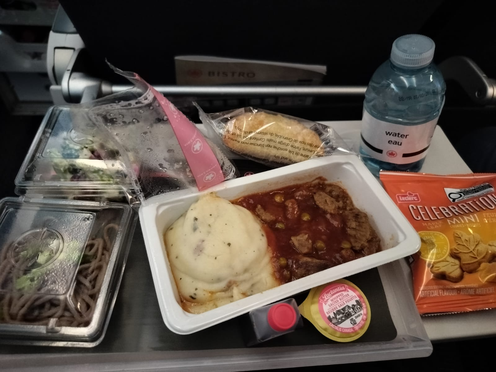
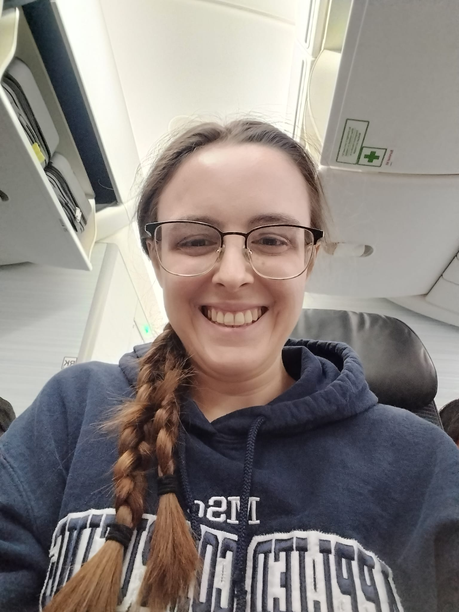
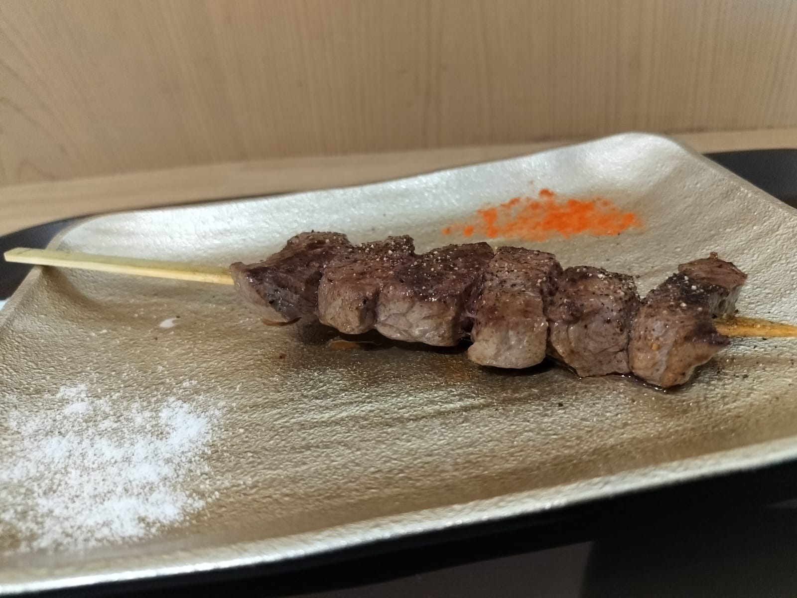
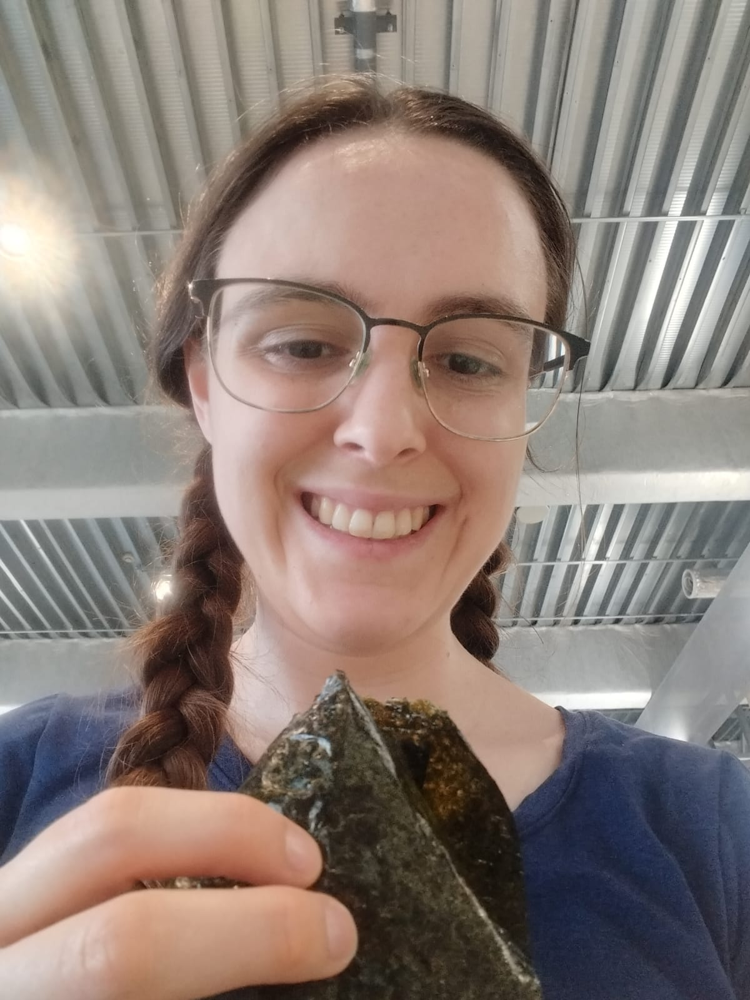
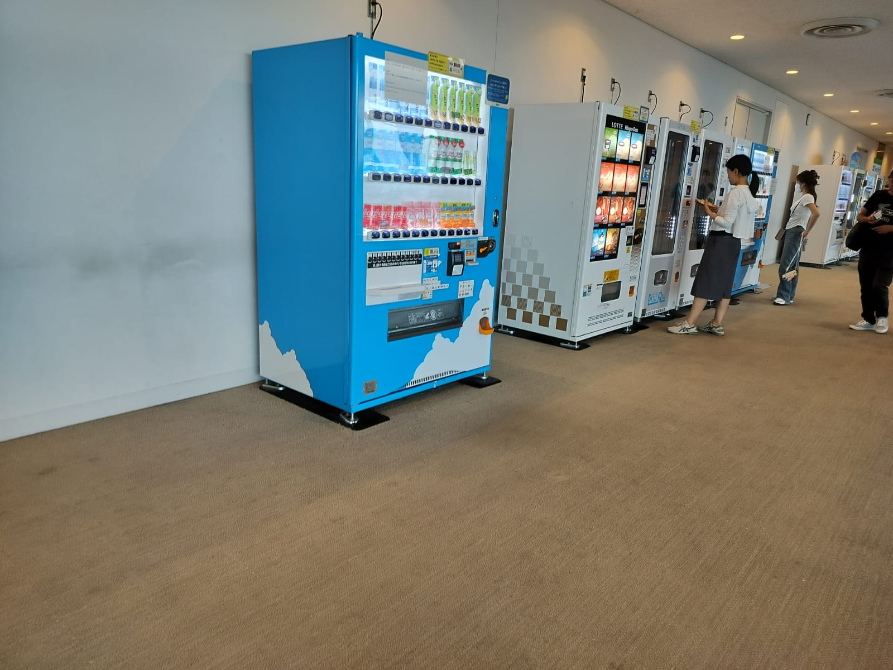
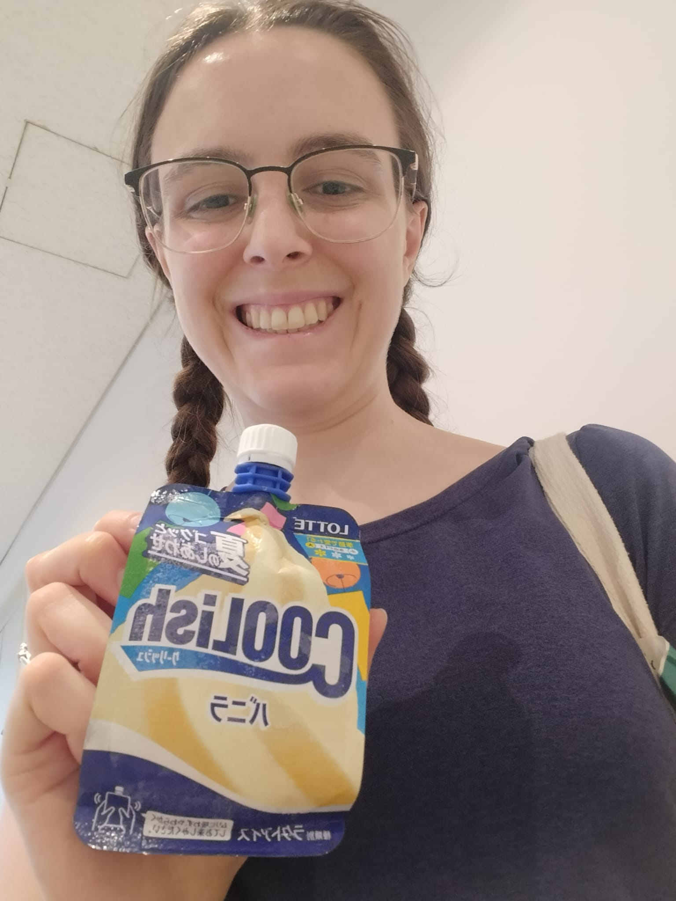
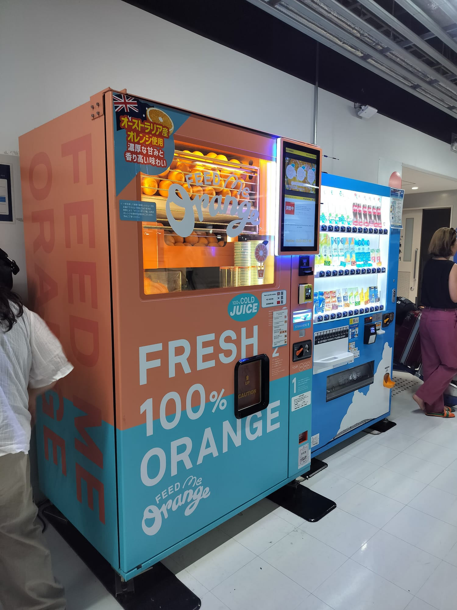
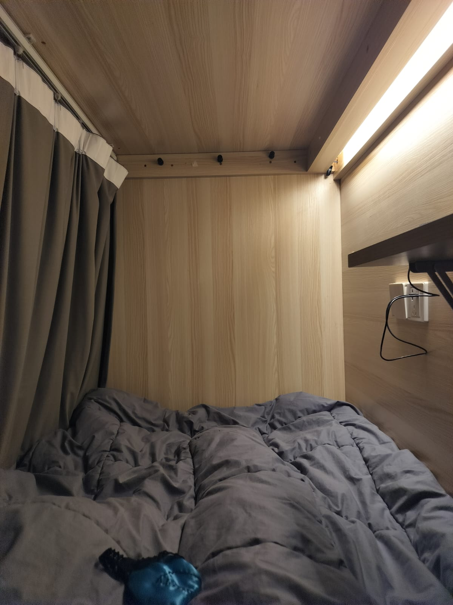

My journey started on the 18th. I flew Toronto to Tokyo and then Tokyo to Shanghai


Tokyo
I had a few hours layover in Tokyo, during which I had to exit, switch terminals, and check in again. A few things stood out to me:
- There are so many vending machines! I even saw one that makes fresh orange juice. I got my dinner from 2 different vending machines near the gate.
- There were lots of features to make things more accessible from quite rooms, to baby seats in the washroom, to auditory notifications of walkways ending.






Shanghai
Throughout the trip, but especially on arrival to Shanghai, I was grateful for the overpreparedness of my binder (Sebastian: this is very Amy Santiago of Rachel)! Prior to leaving, I printed out all our hotel reservations and tickets, as well as our planned activities for each day (with related notes). All these went in chronological order in the binder.
At immigration in Shanghai, I was asked for the hotel reservations and proof of exit flight, and I was grateful to be able to just flip to the right page instead of digging through emails.
After making it in, I got my bag and ordered a Didi (Uber equivalent) to my hotel. The Didi dropped me off at an intersection. I'd been following along on maps, so I could see it was the right place, but when I got out of the car I couldn't which building was the hotel. There were no signs anywhere. I looked at maps again and thought maybe it was around the corner, so I started walking there. An old security guard waived me over and asked "Dayin?" (named of my hotel), I nodded. He pointed to building in front of us and with no words conveyed that it was on the second floor. I could tell this was not the first time he guided a lost foreigner looking for the hotel. Gratefully I turned back to the building and once inside found the hotel. Only three days later, when Sebastian came to visit, did he show me that there was a main entrace around the corner which had big signs.
